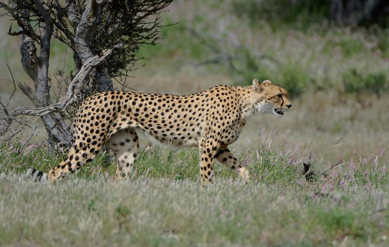

Cheetahs are part of the big cat family. Since Cheetahs weigh less and are smaller than other big cats, they are the fastest mammal on land and can reach 60 miles per hour. They weigh around 120 pounds and they live in eastern and southern Africa. You will mostly see them in open grasslands.
Cheetahs cannot roar. They can only purr. They prey on small and medium sized animals like impalas and hares. They also have excellent eyesight to help them spot preys in the day. Because of their small slender bodies, they camouflage well.
